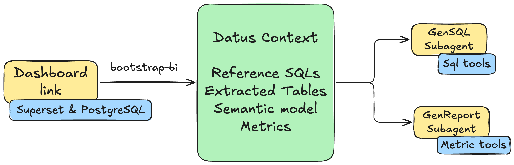

Dashboard Copilot¶
Transform a Superset dashboard into two AI subagents: a main subagent for self-service SQL and an attribution subagent for metric comparison and root-cause analysis.
This tutorial walks through the complete flow with the Superset plugin, the generic dashboard-bootstrap skill, and the Dosi semantic adapter. Dashboard discovery and SQL export belong to the plugin; the skill coordinates user selection and routes exported SQL to Datus's builtin context-building agents.
Why Dashboard Copilot?¶
Traditional BI dashboards are static: they show predefined charts and metrics, but users cannot ask follow-up questions or explore data beyond what has been pre-built. Dashboard Copilot turns the dashboard into analysis agents that can:
- answer ad-hoc questions using the same tables and SQL evidence as the dashboard;
- generate SQL constrained to the dashboard's Knowledge Base scope;
- compare metrics across periods and dimensions;
- provide attribution analysis for metric changes.
The bootstrap process builds reference SQL and semantic metrics first, then creates two scoped subagents:
- Main subagent: self-service SQL over the dashboard's tables, metrics, and reference SQL.
- Attribution subagent: metric comparison, dimension-level attribution, and root-cause analysis.

Prerequisites¶
Before starting, install:
- Docker Desktop or Docker Engine with Docker Compose;
- Python 3.12 and Datus;
- Git,
curl, andunzip.
The commands below use ~/datus-dashboard-copilot-demo as the working directory. They deploy the pinned Superset example stack used by this tutorial and keep generated SQL and semantic assets in that directory.
Step 1: Deploy Superset and PostgreSQL¶
Download the local Superset stack:
mkdir -p ~/datus-dashboard-copilot-demo
cd ~/datus-dashboard-copilot-demo
curl -L -o datus-dashboard-copilot-stack-v1.zip \
https://github.com/Datus-ai/datus-quickstart-data/releases/download/data-engineering-v1/datus-dashboard-copilot-stack-v1.zip
unzip -jo datus-dashboard-copilot-stack-v1.zip \
'*/superset/docker-compose.yml' \
'*/superset/superset_config.py'
The Superset example database identifies PostgreSQL as postgres:5432/superset_examples. dashboard-bootstrap matches this connection identity to a configured Datus datasource. For this host-side demo, expose the same port and make the Compose service name resolvable from the host:
cat > docker-compose.override.yml <<'YAML'
services:
postgres:
ports:
- "5432:5432"
YAML
grep -qE '(^|[[:space:]])postgres([[:space:]]|$)' /etc/hosts || \
echo '127.0.0.1 postgres' | sudo tee -a /etc/hosts
Connection identity
The postgres host alias is only for this local demo. In a real deployment, configure Datus with the actual endpoint already used by the Superset Database connection. Backend, endpoint, and physical database/catalog must produce one unique Datus datasource match. A matching table or schema name alone is intentionally insufficient.
Start the services:
Stop following the logs after Superset is ready. The local services are:
- Superset: http://localhost:8088, username/password
admin/admin; - PostgreSQL:
postgres:5432, databasesuperset_examples, username/passwordsuperset/superset.
Open Superset and confirm that the example World Bank's Data dashboard is available.
Step 2: Install the Superset plugin and Dosi adapter¶
Install the Superset plugin from the Datus Plugins repository:
git clone --depth 1 https://github.com/Datus-ai/Datus-Plugins.git "$HOME/Datus-Plugins"
datus plugin install "src:$HOME/Datus-Plugins/datus-superset-plugin"
datus plugin info superset
If that checkout already exists, update it and reinstall with --force instead of cloning it again.
Install the Dosi semantic adapter into the same Python environment as Datus:
When developing all components from source, follow the editable-install commands in Dosi Semantic Adapter instead.
Step 3: Configure the demo project¶
Set demo credentials as environment variables¶
The demo stack uses public local-only credentials. Keep them out of agent.yml nevertheless:
Run Datus from a shell where these variables remain exported.
Update agent.yml¶
Merge the following entries into the existing agent: section in ~/.datus/conf/agent.yml. Preserve your existing model provider configuration.
agent:
services:
datasources:
superset-pg:
type: postgresql
host: postgres
port: 5432
username: superset
password: ${SUPERSET_PG_PASSWORD}
database: superset_examples
schema: public
semantic_layer:
dosi:
type: dosi
default: true
plugins:
superset:
local:
default: true
api_base_url: http://localhost:8088
auth_mode: login
username: admin
password: ${SUPERSET_PASSWORD}
provider: db
verify_ssl: "true"
timeout: "30"
The launch command below selects superset-pg explicitly. If your existing configuration contains another semantic adapter marked default: true, clear that flag before making Dosi the default for this demo.
The Superset plugin returns the credential-free source identity of every selected query, and dashboard-bootstrap resolves each identity independently against the configured Datus datasources. This allows one Dashboard to contain queries from multiple physical databases.
Configure the profile with the plugin skill
Instead of editing the plugin section manually, start Datus and ask: Configure the Superset plugin profile local for http://localhost:8088 using login auth and the SUPERSET_PASSWORD environment variable. The plugin's superset-setup skill writes only an environment-variable reference, never the literal password.
Enable and verify the plugin¶
Enable the plugin and profile for this project:
Verify both authentication and dashboard discovery before starting the LLM workflow:
You should see World Bank's Data in the dashboard list. The plugin is now ready to provide superset-query-export to the agent.
Step 4: Bootstrap the World Bank dashboard¶
Launch Datus and select a model¶
Always launch Datus from the demo directory so exported SQL, Knowledge Base artifacts, semantic models, and project configuration are written there:
Select an LLM provider and model:
See Model Command for provider configuration.
Start the skill-driven workflow¶
Send one natural-language request:
Use the Superset plugin with profile local and follow the dashboard-bootstrap skill to bootstrap the World Bank's Data dashboard. Select all exportable dashboard queries for reference SQL and metric evidence. Show me the Generation Manifest and wait for confirmation before writing anything.
You can also start the same workflow with the slash command:
> /bootstrap-bi use Superset profile local and the World Bank's Data dashboard; select all exportable queries for reference SQL and metrics
Both forms run the same dashboard-bootstrap workflow.
What the agent does before confirmation¶
The main agent loads two skills:
dashboard-bootstrap, which owns the generic workflow;superset-query-export, which documents the Superset discovery and export commands.
It then uses the plugin to:
datus superset --profile local dashboards list
datus superset --profile local context candidates <dashboard-id>
context candidates is read-only. It returns stable candidate IDs, Chart names, exportability, and a credential-free source identity resolved through each Chart's real Superset Dataset and Database connection.
For this stack, the World Bank queries should resolve to:
backend: postgresql
host: postgres
port: 5432
database: superset_examples
dataset: public.wb_health_population
matched Datus datasource: superset-pg
The agent asks separately which queries should become reference SQL and which should provide metric evidence. This tutorial selects all exportable queries for both sets. Aggregation is a recommendation signal; the metric selection remains explicit.
Review the Generation Manifest¶
Before exporting any SQL, the agent prints a Generation Manifest similar to:
Generation Manifest
Plugin/profile: superset / local
Dashboard: World Bank's Data (<stable dashboard id>)
Reference SQL: all 9 exportable Chart candidates
Metrics: all 9 exportable Chart candidates, grouped into the World Bank domain
Query sources: postgresql/postgres:5432/superset_examples -> superset-pg (resolved, active)
Excluded: none, unless the installed Superset example set contains a failed or hidden Chart
Export mode: selective
Subagents: superset_world_bank_s, superset_world_bank_s_attribution
Chart and Dashboard IDs are installation-specific; use the IDs shown by your manifest rather than copying IDs from this page.
Confirm in the next message:
SQL export is an ask-permission plugin command. Datus may display a separate permission prompt after this confirmation; approve the exact selective export command to continue.
Automated build¶
After confirmation, the skill coordinates four phases. The messages and generated names vary slightly by model, but the ownership and artifact locations remain the same.
1. Plugin SQL export¶
The Superset plugin compiles the confirmed Charts and writes one complete query per SQL file:
reference_sql/superset/world-bank-s-data/
├── manifest.json
├── <chart-id>-<chart-name>-q1.sql
├── ...
└── _source/
├── dashboard.json
└── chart-<id>.json
The dashboard-sql-export/v1 manifest records the confirmed candidate identity, source identity, SQL file, SHA-256 checksum, and status for every query. The skill routes only successful, confirmed entries; it does not reconstruct failed SQL with the LLM.
2. Reference SQL construction¶
Each successful exported SQL is sent in full to one builtin gen_sql_summary task. With the nine World Bank Charts selected, the build produces nine independent SQL summaries under:
An abbreviated task result looks like:
⏺ gen_sql_summary(World Bank Chart: Treemap)
⎿ SQL Summary: Population by Region and Country
Table: public.wb_health_population
Metric evidence: SUM(SP_POP_TOTL)
Dimensions: region, country_code
Saved: subject/sql_summaries/<generated-name>.yaml
⏺ gen_sql_summary(... eight more confirmed queries ...)
⎿ 9 reference SQL items synchronized to the Knowledge Base
The skill never combines several Chart queries into one summary and never replaces the plugin-exported SQL with an LLM rewrite.
3. Unified semantic modeling¶
The confirmed metric SQLs are grouped into one World Bank business domain and sent together to one builtin semantic_modeling task:
⏺ semantic_modeling(World Bank domain)
⎿ Inspected public.wb_health_population
Authored Dosi dataset, dimensions, and reusable metrics
Dosi YAML validated
Metric dry-run SQL validated
Semantic assets reconciled to the Knowledge Base
The Dosi YAML is written under:
The exact metric names can vary with the current dashboard SQL and model, but the generated definitions must preserve the SQL evidence rather than infer calculations from Chart titles alone.
4. Dashboard subagent creation¶
After context construction finishes, dashboard-bootstrap loads create-subagent when the active agent.yml is writable. It derives exact table, metric, and reference-SQL subject references from the successfully synchronized artifacts, then creates or updates:
The main node uses the builtin gen_sql behavior. The attribution node uses the builtin gen_report behavior. Both receive the same successful superset-pg scoped context and use the corresponding builtin prompt templates.
A successful final report resembles:
Dashboard bootstrap complete
Plugin/profile: superset / local
Dashboard: World Bank's Data
SQL export: 9 succeeded, 0 failed
Reference SQL: 9 synchronized
Semantic modeling: World Bank domain validated and synchronized
Subagents created:
- superset_world_bank_s
- superset_world_bank_s_attribution
Configuration: ~/.datus/conf/agent.yml
The skill reports context built; it does not claim numerical equivalence with Superset unless a separate result-comparison test has been run.
Load the generated subagents¶
The current process does not hot-reload written agentic_nodes. Exit and restart Datus from the same project directory:
Open the agent selector:
The two generated nodes should now appear:
Step 5: Use the generated subagents¶
Both subagents can be invoked with @Agent <name>, or selected as the default through /agent.
Self-service SQL with the main subagent¶
The main subagent generates and runs SQL grounded in the dashboard's table and reference SQL scope. Ask:
An example response is:
Top 10 Countries by Life Expectancy at Birth (2010)
Rank Country Region Life Expectancy
1 Hong Kong SAR, China East Asia & Pacific 82.98 yrs
2 Japan East Asia & Pacific 82.84 yrs
3 Switzerland Europe & Central Asia 82.25 yrs
4 Iceland Europe & Central Asia 82.04 yrs
5 Spain Europe & Central Asia 81.63 yrs
6 Italy Europe & Central Asia 81.54 yrs
7 Australia East Asia & Pacific 81.70 yrs
8 Singapore East Asia & Pacific 81.54 yrs
9 Sweden Europe & Central Asia 81.45 yrs
10 Israel Middle East & North Africa 81.60 yrs
Values depend on the version of the example dataset. The agent should state when a requested year is unavailable instead of silently substituting another period.
Attribution analysis with the attribution subagent¶
The attribution subagent works against the generated metrics and semantic dimensions. Ask:
An attribution report should include:
- the overall population change;
- regional and country-level contributors;
- dimension-level contribution or importance;
- the strongest drivers and relevant caveats;
- a conclusion grounded in metric query results.
An abbreviated example:
World Population Growth: 2003 vs 2013
Overall change: total population increased across the period.
Top regional contributors
- South Asia
- Sub-Saharan Africa
- East Asia & Pacific
Primary drivers
1. Large base populations and sustained growth in South Asia.
2. Higher population growth in Sub-Saharan Africa.
3. Continued but slower absolute growth in East Asia & Pacific.
The report lists the metric queries, dimensions, comparison periods, and
limitations used to reach the conclusion.
Do not treat the sample prose above as a fixed benchmark. Reproducibility here means the same plugin/skill workflow, source SQL, artifact ownership, and scoped-agent construction can be replayed; LLM wording and generated subject classifications may vary.
Subagent comparison¶
| Subagent | Naming | When to use | Working context |
|---|---|---|---|
| Main | {platform}_{dashboard} |
Ad-hoc queries, detail lookups, self-service SQL | Dashboard tables + exact reference SQL + metrics |
| Attribution | {platform}_{dashboard}_attribution |
Metric comparison, root-cause analysis, dimension attribution | Dashboard metrics + semantic dimensions + reference SQL |
Send “what is X?” or “show me Y” questions to the main subagent. Send “why did Z change?” or “which dimension drove the movement?” questions to the attribution subagent.
Troubleshooting¶
The plugin is not visible to the agent¶
Run:
Then restart the session. Plugin prompt and skill context are prepared when a session starts.
The Dashboard queries do not match superset-pg¶
Inspect the credential-free identities:
For this demo they must report PostgreSQL at postgres:5432/superset_examples. Confirm that the Datus datasource uses the same endpoint and physical database; public.wb_health_population alone is not sufficient identity evidence.
Some Charts fail to export¶
The plugin records failures in manifest.json. A Chart may have lost its Dataset, may use an unsupported visualization-specific query shape, or may return no compiled SQL. Keep successful entries and retry only failed candidates after correcting Superset. Do not ask the LLM to invent replacement SQL.
Metrics cannot be authored¶
Confirm that datus-semantic-dosi is installed and that dosi is the selected semantic adapter. MetricFlow and plain OSI projects are query-only for this workflow.
Subagents are not created¶
Context construction can succeed even when configuration persistence is unavailable. Confirm that the loaded agent.yml exists and is writable, and restart Datus after the final report says the two nodes were created or updated.
Next steps¶
- Dashboard Bootstrap — complete generic workflow contract.
- Plugins — plugin installation, profiles, activation, and permissions.
- Dosi Semantic Adapter — Dosi installation and semantic behavior.
- Subagent Introduction — subagent capabilities and invocation.
- Knowledge Base — inspect and extend generated context.
- Metrics — manage synchronized metrics.
- Semantic Models — inspect generated semantic assets.